2026: Winter is Coming
A challenging season focused on snow management and survival mechanics.
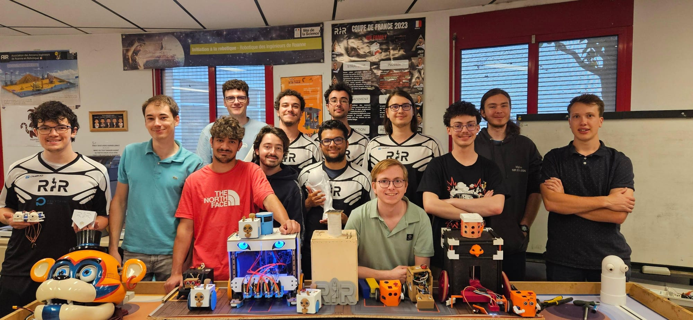
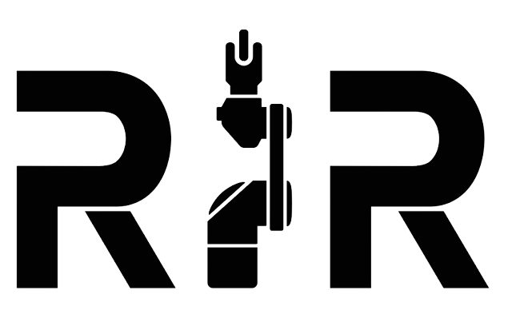
RIR is an independent student association run by engineering students from the Industrial and Robotic Systems department at Polytech Lyon (Roanne campus). We bring together passionate future engineers to design, build, and program complex technical projects. From advanced robotics to our custom closed-loop PLA recycling line, we learn by doing.
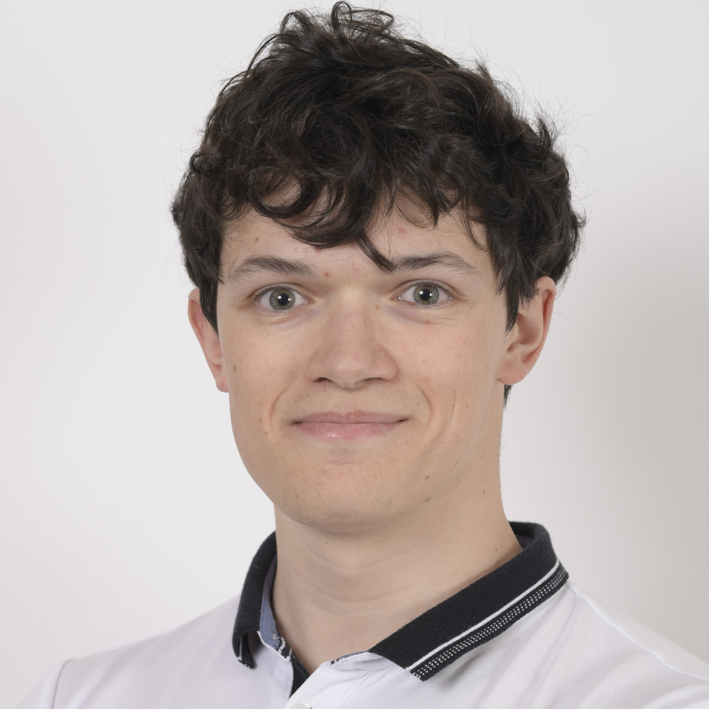
Celyann Ceard is the current President of RIR and a final-year (5A) engineering student in Industrial Systems and Robotics. The president leads the association's technical and strategic vision, coordinating our record-breaking teams and pushing for technological excellence in every project we undertake.
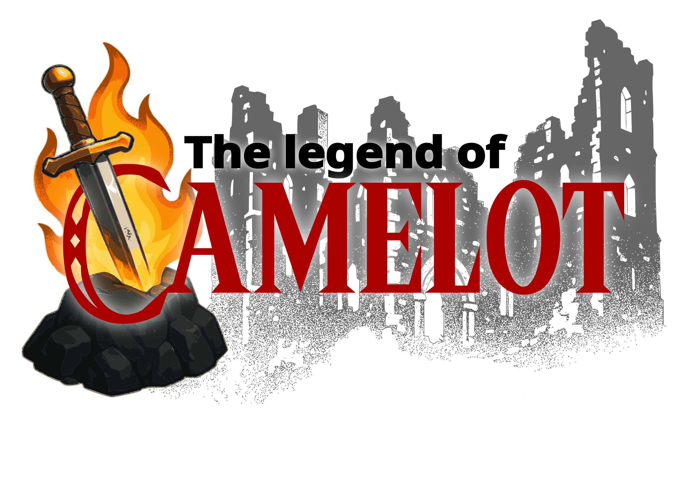
The Coupe de France de Robotique is our flagship annual project. It is one of Europe's largest student robotics events. For the upcoming "Legend of Camelot" edition, our association is experiencing unprecedented engagement. We have formed two distinct teams (a 3A/PEIP team and a 4A/5A team), mixing promotions to share knowledge, with the ambitious goal of reaching the Top 5.
Every year, the rules change, and we build entirely new autonomous robots from scratch. Here is a look at our recent history in the cup.
A challenging season focused on snow management and survival mechanics.
Our robots hit the stage in a spectacular performance-themed competition.
We developed advanced plant-handling and resource-gathering mechanisms for the red planet.
Celebrating the 30th anniversary of the Cup with a bakery-themed challenge.
Beyond the workshop, RIR is deeply committed to sharing our passion for technology with the public. We actively participate in various exhibitions and forums to promote our school, our sponsors, and to provide scientific mediation for younger generations and their families.
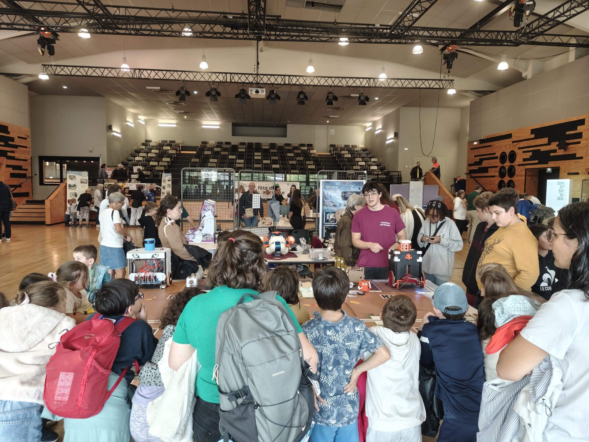
An annual national event where we introduce children and adults to the basics of robotics, electronics, and 3D printing.
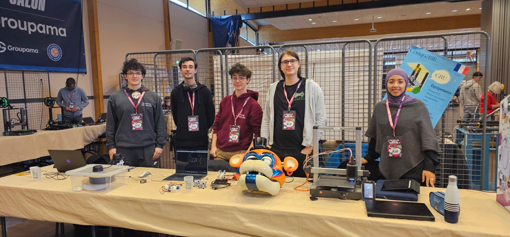
Organized by the Roanne Fablab, this maker fair allows us to showcase our mechanical creations and custom manufacturing tools.
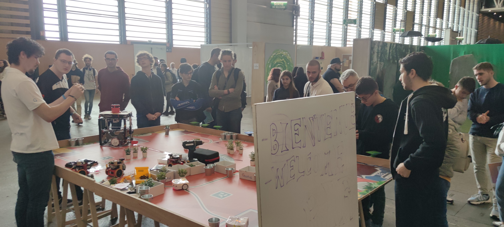
A massive pop-culture and tech convention in Lyon where our robots are demonstrated to thousands of curious visitors.
The RIR workshop is a true hub for innovation. Beyond the Robotics Cup, our members develop personal and side projects that push the boundaries of our engineering, electronics, and manufacturing skills.
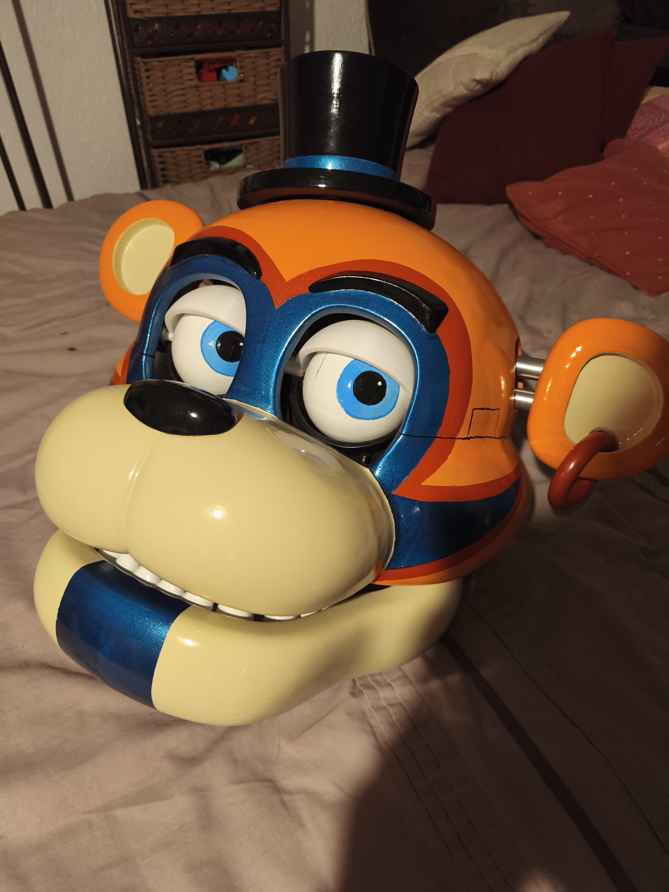
A fully functional, life-size animatronic head running on battery power. Driven by a Jetson Nano, it features face tracking, voice synthesis, addressable LED lighting, and embedded AI for interactive responses.
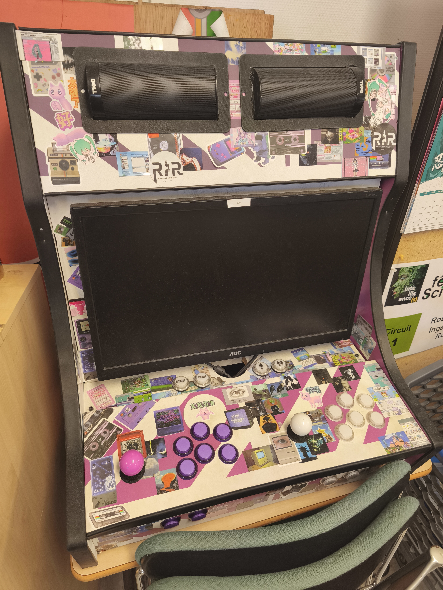
A custom-built arcade cabinet powered by a Raspberry Pi 4. It emulates dozens of retro consoles and classic arcade machines, bringing hundreds of vintage games to the workshop for well-deserved breaks.
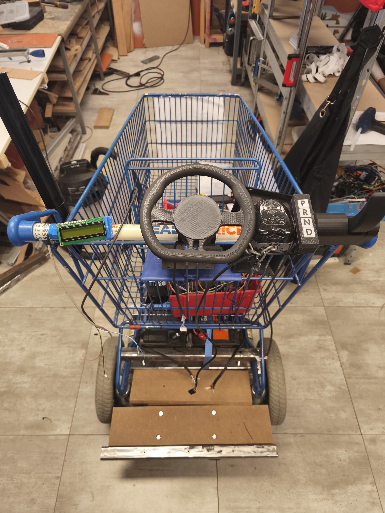
We upcycled a standard shopping cart into a dedicated logistics vehicle. It allows us to easily and safely transport our heavy robots, PAMIs, and equipment across exhibitions without the heavy lifting.
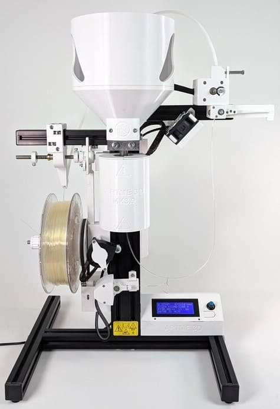
A complete closed-loop PLA recycling line. Featuring a shredder, a filament dryer, and a custom extrusion system, this machine allows us to manufacture our own 3D printing spools from shredded scrap plastic.